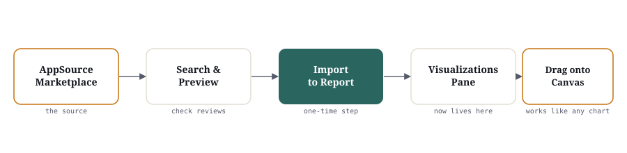

Thirty built-in charts cover most questions. Custom visuals are for the ones that don't.
AppSource is Power BI's plug-in marketplace — hundreds of extra beyond the ~30 built-in chart types covered on the Visualizations page, built by Microsoft, its partners, and independent developers. They drop into the same Visualizations pane and read fields exactly the way a built-in chart does — but every one you add runs third-party code inside your report, so knowing when to reach for one, and how to check it first, matters as much as knowing it exists.

What a custom visual actually is
Once installed, a custom visual behaves exactly like Bar Chart or Line Chart — drag a field into a well, format it in the same pane, save it with the rest of the report. The only difference is where it came from: Microsoft AppSource, or occasionally a file, instead of the box. Some are published by Microsoft itself, some by analytics consulting firms, many by independent developers — anyone can publish one, which is exactly why the trust-check later on this page matters.
A handful of categories show up again and again in real business reporting:
| Business question | Custom visual category | Why a built-in chart falls short |
|---|---|---|
| Which words come up most in open-text feedback? | Word Cloud | No built-in visual sizes text by frequency |
| Show overlapping tasks, stays, or projects on a real date timeline | Gantt Chart | Bar charts can't position a bar between two actual dates |
| Show how volume splits and flows between stages or groups | Sankey / Chord Diagram | No built-in visual draws flow width between nodes |
| Compare a value against a target and performance bands, densely | Bullet Chart | A Gauge fits one metric per screen; Bullet fits many in a row |
| Compare several dimensions of one item at once (a scorecard) | Radar / Spider Chart | No built-in visual plots multiple axes around a center point |
| Show daily activity across many months (attendance, logins) | Calendar Heatmap | A Matrix holds the numbers but can't shade like a calendar grid |
None of these are required anywhere else in this course — they're here because you will eventually meet a business question a built-in chart genuinely cannot answer, and you should know where to look.
When to reach for one — and when to stay native
| Reach for a custom visual | Stay with a built-in visual | |
|---|---|---|
| The question | A built-in chart structurally cannot show it — e.g. real date-range bars, word frequency, flow between groups | A bar, line, map, KPI card, or table would answer it just as well |
| Speed | Worth testing and timing before it ships | Microsoft-optimized, fastest by default default choice |
| Support | You've confirmed the publisher is active and the visual was updated recently | No dependency on a third party ever going quiet |
| Risk | You've vetted it (see below) and it's going into a low-stakes report first | No extra security or performance review needed |
Advantages and disadvantages, stated plainly
Advantages
- ✓Answers questions built-in charts structurally can't — real date-range bars, word frequency, flow between groups
- ✓Same drag-and-drop field wells as any built-in chart — no new mental model once it's installed
- ✓Most are free, and several — including many of Microsoft's own — are Certified and actively maintained
Disadvantages
- ✕Third-party code runs inside your report — a real security surface, larger for uncertified visuals
- ✕Can render slower than native visuals, especially on large tables (see Performance, below)
- ✕An organization's Power BI admin can restrict which custom visuals are allowed tenant-wide — a report that works on your laptop can fail to render for a colleague
- ✕No continuity guarantee — a publisher can stop updating a visual, or pull it from AppSource, with no Microsoft backstop the way the built-in ~30 have
Finding a custom visual
The same catalog is also a standalone website — AppSource (appsource.microsoft.com) — worth browsing outside Desktop while you're still planning a report. It's easier to compare several visuals side by side, read full descriptions, and check ratings there than inside the narrow pane. Anything found on the website gets added to a report the same way, from inside Desktop.
Importing one into your report
From AppSource, inside Desktop
- Visualizations pane → "..." → Get more visuals
- Search by name, or browse a category
- Open the listing — check publisher, rating, and the Certified badge before adding (next section)
- Add — the icon appears at the bottom of the Visualizations pane, ready to use like any built-in chart
From a downloaded .pbiviz file
- Visualizations pane → "..." → Import a visual from a file
- Browse to the .pbiviz file — common for an internal company-built visual, or one shared outside AppSource entirely
- Confirm the security prompt — Power BI always warns that a visual from outside AppSource hasn't been through Microsoft's review
- The visual appears in the Visualizations pane for that report only
Is it safe to use? Evaluating trustworthiness
| Signal | What to check | Why it matters |
|---|---|---|
| Certified badge | A checkmark shown right on the AppSource listing | Means Microsoft reviewed it for security and performance — the closest thing to an official stamp |
| Publisher | Microsoft, a known analytics partner, or an unnamed individual account | An accountable, actively-maintained publisher is lower long-term risk |
| Ratings & review count | Star rating, and how many organizations actually left one | A handful of reviews tells you far less than hundreds |
| Data access requested | Whether it only renders the fields you give it, or calls out to an external service (a mapping or AI API, say) | Sending company data outside Power BI is a real governance question, not a technicality |
| Open source | Whether the code is publicly published — many, including several of Microsoft's own, are on GitHub | You or your IT team can inspect what it actually does instead of taking the listing's word for it |
Licensing, in general terms
Free
No cost to add or use. Most custom visuals on AppSource fall here, including many of Microsoft's own.
Freemium
Free to add, with a paid tier unlocking extra formatting, export options, or higher data-point limits.
Paid / subscription
Requires a license key, sign-in, or subscription from the publisher before it renders at all — terms set entirely by them, not Microsoft.
Performance: test before it ships company-wide
| Native (built-in) visual | Custom visual | |
|---|---|---|
| Render speed | Optimized by Microsoft, fastest by default | Varies by publisher — can be noticeably slower, especially uncertified ones |
| Large datasets | Built and tested at enterprise scale | Not guaranteed — test explicitly on a full-size table, not just a 100-row practice file |
| Support | Microsoft, as part of the product, indefinitely | Whoever published it — can pause updates or stop entirely |
Guided walkthrough
Gantt Chart — Hospital dataset: patient length of stay
Concept: A Gantt Chart visual draws one horizontal bar per row, positioned and sized by a start date and an end date — something no built-in Power BI chart does. The closest built-in option, a stacked bar chart, has no way to place a bar between two real calendar dates.
Business question: A hospital ops manager wants to see, at a glance, which patients are occupying a bed far longer than others in the same department — a length-of-stay outlier is either a genuinely complex case or a discharge-process bottleneck worth a follow-up question.
Field mapping Table: Hospital
All four fields live on the one Hospital table — no join needed to build this.
Steps
- Download
Hospital_Clean.csvfrom the Datasets page → Get Data → Text/CSV → Transform Data - In Power Query, confirm Admission Date and Discharge Date are typed as Date, not Text — a Gantt visual can't place a text value on a date axis
- Visualizations pane → "..." → Get more visuals → search "Gantt" → check the listing, then Add
- Build the field mapping above: Patient into the task well, Admission Date into Start, Discharge Date into End, Department into Legend
- Optional: add a in so bars can be sorted or labeled by duration directly:
Length of Stay = Hospital[Discharge Date] − Hospital[Admission Date] - Format → sort by Start Date so the timeline reads left to right in admission order, and turn on data labels for the duration
Once built, a pattern like this is what you're looking for — illustrative values, not the real file's numbers:
Best practice: Keep Department in the Legend well — length of stay only makes sense compared within the same specialty, since a normal Maternity stay and a normal Cardiology stay are very different numbers.
Common mistake: Building the visual before checking the two date columns actually parsed as Date — the same trap as a Line Chart X-axis, except here it can silently misdraw every bar's length, not just the sort order.
Exercise
Find, vet, and justify one custom visual
- 1Pick any dataset already used in this course (Sales, HR, Retail, Banking, or Hospital) and name one real business question a built-in chart genuinely cannot answer.
- 2Search AppSource for a custom visual that answers it, and note its Certified status, publisher, and review count.
- 3Import it and build it against your chosen dataset.
- 4Write two sentences: why a built-in chart couldn't do this job, and what you checked before trusting the visual.